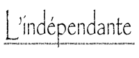
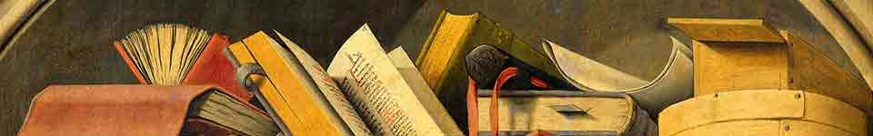

Coups de coeur
- Accueil
- Présentation
- Informations pratiques
- Evènements
- Nos coups der coeur

Lecture du soir : Nietsche
Cette semaine, votre libraire vous invite à lire un aphorisme de Nietzche au moment du coucher.
Si le bonheur était véritablement désirable pour l'être humain,
l'idiot représenterait incontestablement le plus beau spécimen
de la race.
Plus nous nous élevons et plus nous paraissons petits à ceux
qui ne savent pas voler.
Lecture au quotidien : Montaigne
Chaque jour Montaigne nous démontre que ce qui tient lieu de boussole n'indique pas toujours le nord.
Qui craint de souffrir souffre déjà de ce qu'il craint.
Les hommes (dit une sentance grecque ancienne) sont
tourmentés par les opinions qu'ils ont des choses, non par les
choses mêmes.
Lecture de saison : Machiavel
Lorsque la saison est froide, lisons Machiavel en guise de boisson chaude. Lorsque la saison est chaude, relisons le comme tout simplement.
Qand il s'agit d'offenser un homme, il faut le faire de telle
manière qu'on ne puisse redouter sa vengeance.
Un acte de justice et de douceur a souvent plus de pouvoir sur
le coeur des hommes que la violence et la barbarie.